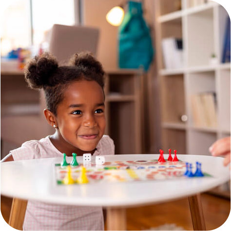
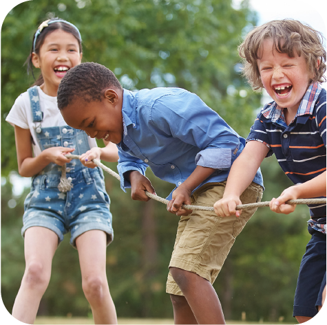
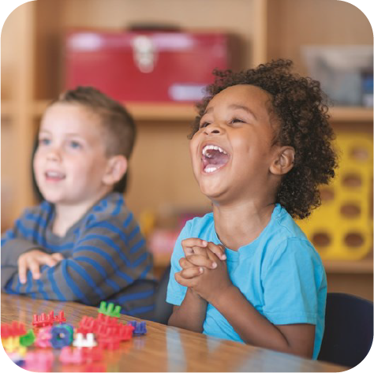

StapSteen kids
StapSteen kids is een kinderwerking voor de gezinnen in de buurt van ons StapSteen huis in Laken.
De activiteiten kunnen gaan van knutselen tot koken of sport en spel. We proberen een divers programma aan te bieden dit gaat tweewekelijks door op zondagnamiddag.
We leren de kinderen op een respectvolle manier met elkaar om te gaan en met elkaar te communiceren.
Wil je graag meer informatie of wil je meewerken in het team van StapSteen kids? Meld je hieronder aan als vrijwilliger!